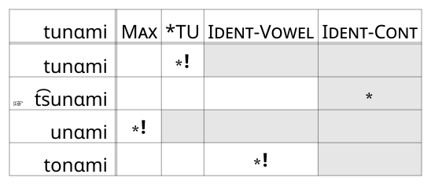
Optimality Theory: The good and the bad
Typology and Conspiracies
Two strengths of OT is how it can account for
Typological patterns (cross-linguistic comparisons)
“Conspiracies” within languages.
Typology
There are many asymmetries in syllable structure patterns cross-linguistically
Codas
Some languages disallow codas altogether
- CV, *CVC
Some languages allow codas
- CV, CVC
No language requires a coda
- *CV, CVC
Typology
Maybe there’s a NoCoda markedness constraint
Languages that Disallow Codas
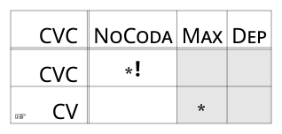
Typology
Maybe there’s a NoCoda markedness constraint
Languages that Allow Codas
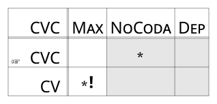
Typology
There’s no way to rank NoCoda, Max and Dep in a way that winds up requiring a coda.
There’s also no language that requires a coda.
Typology
Onsets
Some languages require syllables to have onsets
- CV, CVC, *VC, *V
Some languages allow onsetless syllables
- CV, CVC, VC, V
No language disallows onsets
- *CV, *CVC, VC, V
Typology
Maybe there’s an Onset markedness constraint
Languages that require onsets
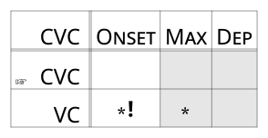
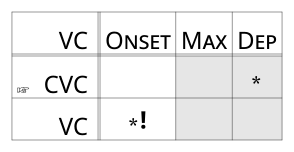
Typology
Maybe there’s an Onset markedness constraint
Languages that don’t require onsets
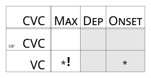
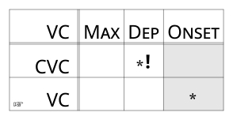
Typology
There’s no way to rank Onset, Max and Dep in a way that disallows onsets.
There’s also no language that disallows onsets.
Typology
Other typological asymmetries:
Complex Onsets & Codas
Some languages disallow complex onsets and/or codas
Some languages allow complex onsets and/or codas
No language requires complex onsets and/or codas
Word Final Devoicing
Some languages disallow voiced obstruents at the end of words.
Some languages allow voiced obstruents at the end of words.
No language requires voiced obstruents at the end of words.
Conspiracy
Sometimes, languages seem to do multiple different things to avoid a single kind of outcome.
Conspiracy
Japanese doesn’t like having the sequence [tu]
| UR | SR |
|---|---|
| kɑtu | kɑt͡su |
| tunɑmi | t͡sunɑmi |
Conspiracy
Conspiracy
When borrowing words, Japanese tends to epenthesize [u] to conform to its CV syllable structure.
| UR | SR |
|---|---|
| besbɔl | besubɑru |
Conspiracy
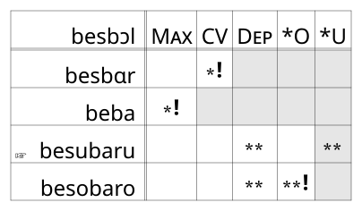
Conspiracy
But, when we need to epenthesize a vowel to break up a cluster with [t], Japanese uses [o].
| UR | SR |
|---|---|
| stɹaik | sutoraiku |
Conspiracy
Both of these look like a “conspiracy” to avoid [tu].
Assibilate [tu] to [t͡su] to avoid the [tu] sequence.
Epenthesize [u] to break up clusters, unless that would create the [tu] sequence, in which case use [o]
Conspiracy
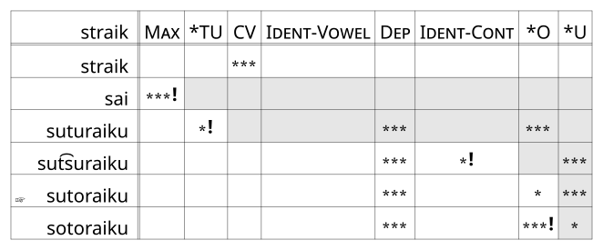
Conspiracy
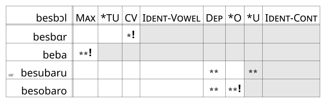
Conspiracy
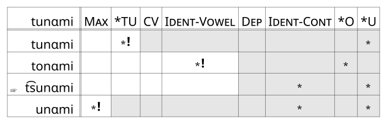
Shortcomings: Opacity
Let’s cast our mind back to the Bosnian-Serbian-Croatian Data
| UR | ledn-i | ledn | bel | okrugl |
| Epenthesis | -- | ledan | -- | okrugal |
| L-Vocalization | --- | --- | beo | okrugao |
| SR | ledni | ledan | beo | okrugao |
Shorcomings: Opacity
We can come up with constraints and constraint rankings to give us each of the transparent forms, but we can’t capture the opaque form.
Shortcomings: Opacity
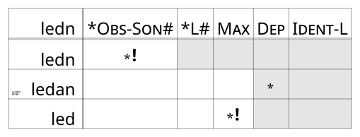
Shortcomings: Opacity
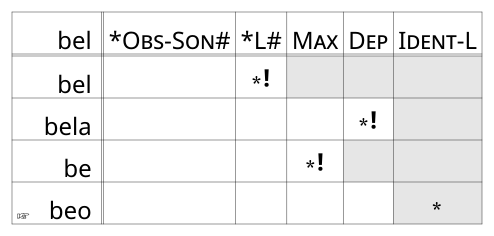
Shortomings: Opacity
The wrong candidate wins
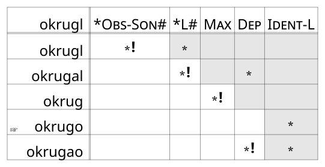